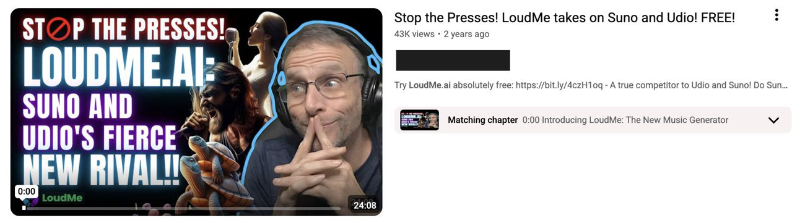

I supported YouTube influencer marketing across CocoSoft's AI-product portfolio, spanning creator research, segmentation, negotiation, content briefing, and performance optimization. Before LoudMe.ai launched, I proactively explored the product and eventually took substantial ownership of its creator campaign.
I joined CocoSoft supporting established AI products including BypassGPT and EssayGPT, where I learned the team's existing creator marketing process. When the company began preparing LoudMe.ai, a new AI music-generation product, I became interested before its public launch and started exploring it independently.
Before formal outreach began, I:
Rather than treating sourcing as one-off outreach, I built a structured creator library to compare opportunities across audience fit, content style, pricing, and performance. For each creator, I tracked factors including:
The library gave me a consistent way to compare creators across the same dimensions instead of evaluating each opportunity in isolation. It also remained a reusable team resource after my internship, helping preserve partner history and inform future outreach.
I stopped screening creators by reach alone. For an unfamiliar AI product, different creator types could serve very different marketing purposes, so I began mapping creator type to the role they could play before outreach. LoudMe.ai is one example of how I applied that approach.
| Creator Type | Role | Purpose |
|---|---|---|
| AI reviewers | Product education / technical credibility | Explain what the technology does and why it's different |
| Music producers | Professional use cases | Show how the product fits into real creative workflows |
| Vocal / music creators | Product demonstration | Make output quality and creative possibilities tangible |
| Everyday music enthusiasts | Accessibility / mainstream appeal | Make the product feel approachable to non-technical users |
Across the AI-product portfolio, I sourced and reached out to hundreds of creators, ultimately securing 70+ creator partnerships. My role covered the full partnership process, from outreach and negotiation to briefing, content review, and launch.
Using Google Analytics, YouTube Analytics, and Excel, I compared creator-level traffic, CTR, CPM, registrations, and conversion, then looked at those results alongside audience fit, recent traffic, and content quality.
Across the AI-product portfolio I supported, the creator program generated:
Nearly two years after the campaign, one LoudMe.ai creator I personally sourced, vetted, negotiated with, and launched still ranks among the top five YouTube search results for "loudme.ai."

Still ranking among the top five YouTube results for "loudme.ai" nearly two years later. 43K views.
The placement continued to generate organic product discovery long after the original collaboration ended.